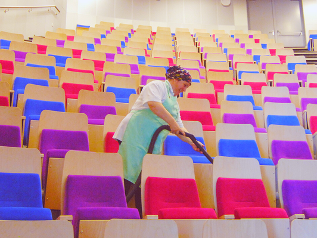
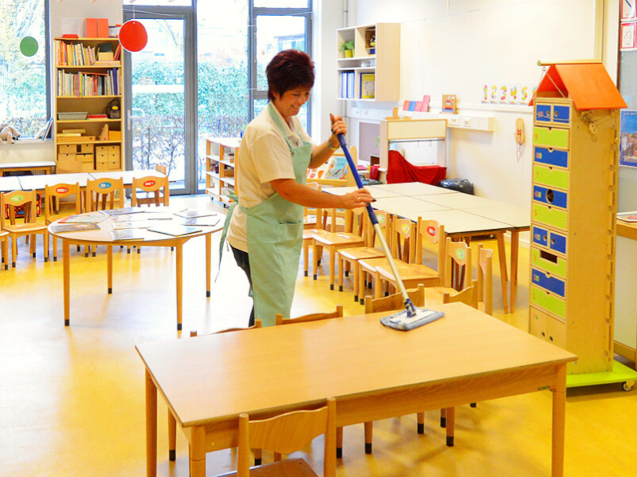
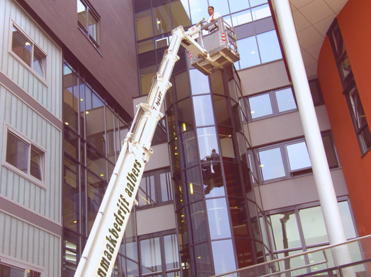
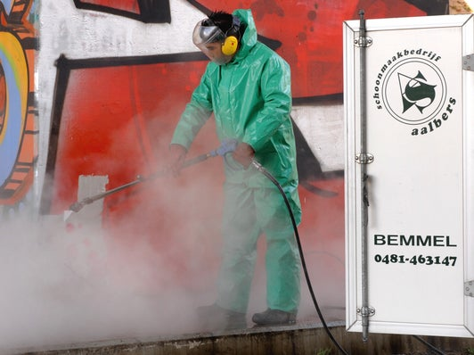
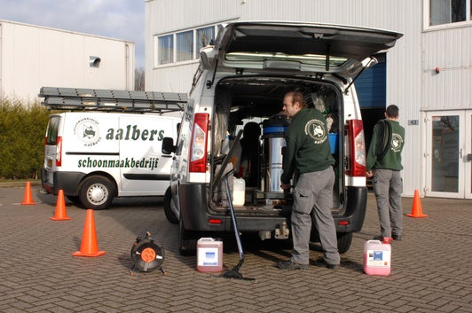
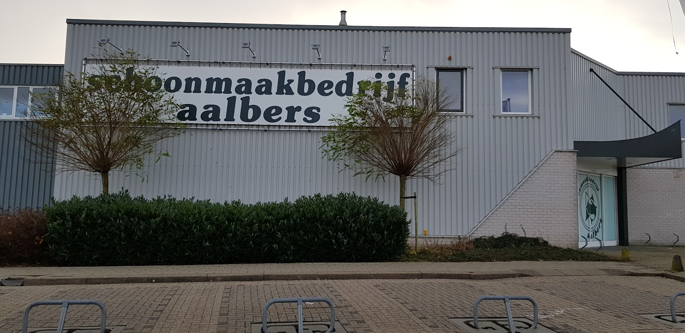
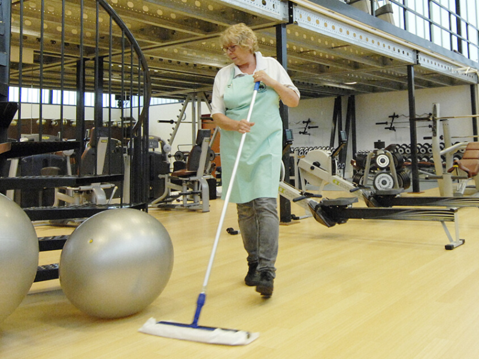

reguliere schoonmaak
Dagelijks of wekelijks, met een vaste ploeg op elk project. Zo kent u de gezichten en weten onze mensen wat er bij u speelt.
Regionaal schoonmaakbedrijf uit Bemmel voor kantoren, scholen, zorg, overheid en industrie. Met eigen mensen, eigen machines en korte lijnen naar de directie.

Iedere klant is anders, dus wij leveren maatwerk. Veel specialistisch werk doen we met een eigen ploeg, en we denken mee over strategie en facilitair beheer.

Dagelijks of wekelijks, met een vaste ploeg op elk project. Zo kent u de gezichten en weten onze mensen wat er bij u speelt.

Gediplomeerde glazenwassers en gevelreinigers. Aalbers is een van de 26 bedrijven met de module Glas en Gevel van het Keurmerk Schoon.

Graffiti, vloeronderhoud, tapijt, dieptereiniging van sanitair en keukens, bouwoplevering en calamiteiten. Met eigen machines en materialen.

Een 24/7 inzetbare ploeg met eigen uitrusting, plus een flexibele schil oproepkrachten voor ad hoc verzoeken, groei of krimp.
Conciërge- en huismeesterdiensten, kwaliteitskeuringen (DKS en VSR), beschermings- en desinfectiemateriaal, cleanroom, levering sanitaire voorzieningen, onderhoudsservice, evenementenreiniging, reinigen raambekleding, plafondreiniging, meubelreiniging, reiniging kantoorapparatuur, geurbestrijding, vervanging eigen dienst schoonmaak, machinekeuringen, schoonmaakmachines, vloeradvies, begeleiden of opzetten van een schoonmaakdienst in eigen beheer en ondersteuning bij facilitair management en administratiebeheer.
Wij werken voor kantoren, banken, de bouw, gemeentes, horeca, industrie, non-profit, kunst en cultuur, entertainmentcentra, zorginstellingen, onderwijs, recreatie en (semi)overheid.
Onze mobiele ploeg is 24/7 inzetbaar en komt compleet met eigen uitrusting op locatie.
In 1974 begon Kees Aalbers zijn schoonmaakbedrijf. Zijn moeder was zijn eerste werkneemster. Hij belde van deur tot deur aan om tapijt te reinigen.
Zijn eerste vaste project was een basisschool in Elst. Die school is nog steeds klant. Ruim vijftig jaar later is Aalbers een brede dienstverlener, een begrip in en ver buiten Gelderland, en Kees zorgt nog altijd dat zijn opdrachtgevers compleet ontzorgd worden.

Aalbers is bewust een platte organisatie. Objectleiding en directie staan wekelijks, vaak dagelijks, bij u op de werkvloer.

Onze organisatie voldoet aan de normen voor veiligheid, gezondheid, milieu en kwaliteit. Onze eigen keurmeester keurt jaarlijks conform NEN 2484, 2718 en 3140.
Keurmerk Schoon
Lid van Schoonmakend Nederland. Administratie op orde, de cao wordt toegepast en het werk gebeurt volgens afspraak.
Module Glas en Gevel
Als een van 26 bedrijven. Gericht op veilige uitvoering, opleiding en tevredenheid.
ISO 9001 en ISO 14001
Grip op kwaliteit en een gecertificeerd milieumanagementsysteem, extern getoetst.
VCA en NEN 4400-1
Veilig werken op risicovolle locaties, en het SNA-keurmerk dat u als opdrachtgever beschermt.
Iedere medewerker wordt binnen een jaar opgeleid tot vakgeschoold schoonmaker, met ons eigen lesprogramma. Het slagingspercentage is minimaal 90%. Elk jaar frissen we kennis en kunde op.
Zoek je een baan of een (afstudeer)stage? Bel of mail ons gerust.
"Top contact met de rayon manager Carmen van de Westeringh. Als er iets kapot was of je spullen nodig had, of als je even prive wat had, staat ze altijd voor je klaar met een luisterend oor."
"Half jaar bij aalbers gewerkt, prima ontvangen en nooit ergens om moeten smeken! Ik had Carmen als Rayon! Ik hoefde maar te bellen en het was er, er was vanuit haar altijd een luisterend oor! Aantal weken samen op pad geweest! leuke tijd gehad!"
Vertel wat voor pand het is en wat u nodig heeft. We komen graag langs om te kijken.